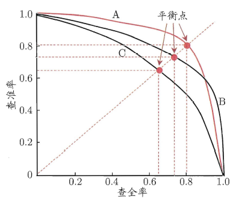
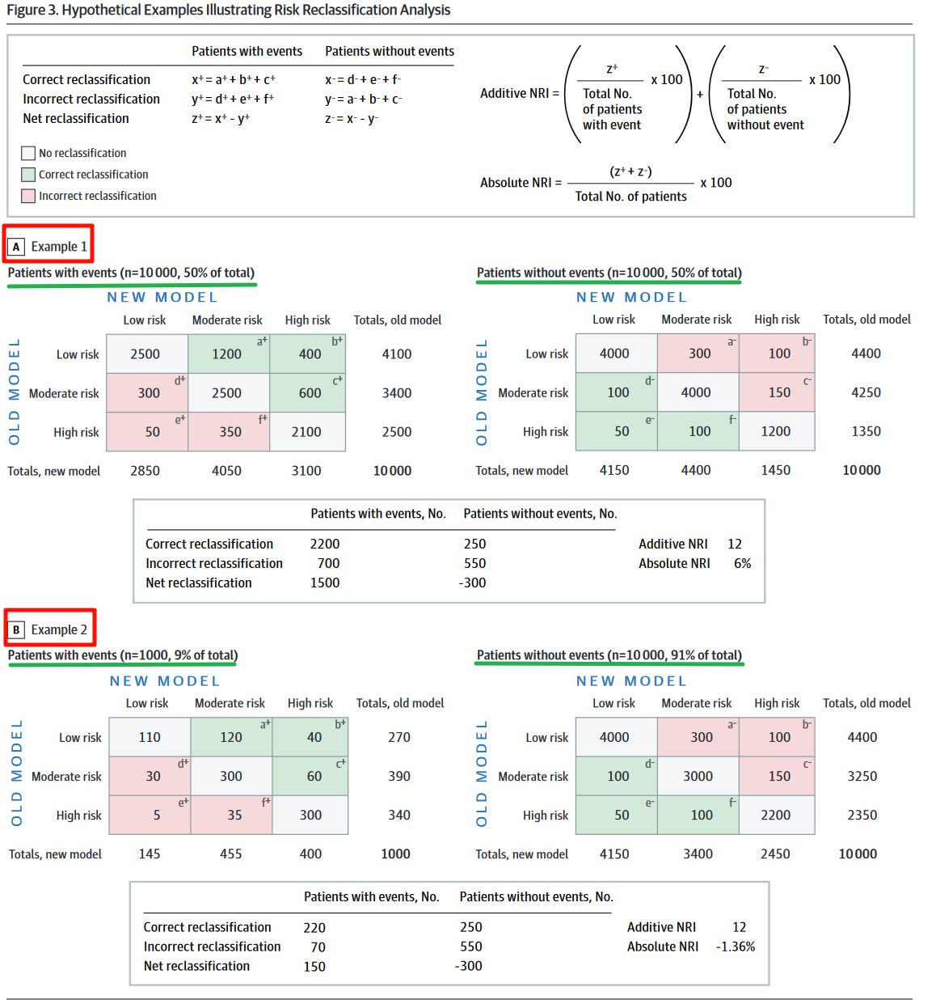

临床预测模型的评价
当我们建立好预测模型后，如何评价我们的模型好坏呢？当我们建立了很多不同的模型，如何评价不同模型之间的优劣呢？
这一篇主要就是讲这些，其实就是一些概念的理解，用代码计算是非常简单的。
总的来说，临床预测模型的评价可以从以下几个方面进行：
- 区分度
- 校准度
- 临床适用性
- 模型改善度
如果你只有1个模型，不涉及模型的比较，那么就从区分度（Discrimination）、校准度（Calibration）、临床适用性三个方面进行评价。如果涉及多个模型的比较，还需要增加模型改善度相关的评价，比如：NRI和IDI。
什么样的模型是优秀的模型？
一个理想的模型应该是这样的：它能正确区分所有的患者和非患者，并且能准确预测每一个个体发生危险事件的风险大小。很明显这样的模型是不存在的，我们只能朝这个方向努力。
评价一个模型的好坏可以从区分度（Discrimination）和校准度（Calibration）两个方面进行。
区分度指的是一个模型能正确把人群分为患者/非患者，或者正确区分个体是处于低风险、还是处于高风险，或者正确预测患者是存活、还是死亡等的能力。
但是一个模型只是有良好的区分度是不够的，因为临床问题是很复杂的，并不是只要正确分类就行了。对于不同的患者，可能他们都处于高风险组，但是对于51%的风险和90%的风险，我们的处理是不一样的！
这就引出了校准度的概念，校准度指的是结局实际发生的概率和模型预测出的概率之间的一致性，所以校准度又叫一致性、拟合优度（goodness-of-fit），校准度体现了一个模型对绝对风险预测的准确性。
尽管只靠区分度是不够的，但临床医生不应使用区分度较差的模型。区分度差的模型也没有必要进一步评价校准度了。
一个具有良好区分度的模型，校准度不一定也很好。比如，A和B两个患者都是低分险组，A的风险是10%，B的风险是30%，如果一个模型把这两个患者都分到低风险组，那说明这个模型的区分度很好，因为分的很准；但是如果这个模型预测A的风险是1%，B的风险是3%，那么这个模型的校准度就是很差的，因为预测的概率和实际概率相差很大。如果使用这样的模型预测出来的结果处理病人的话，可能就会碰到很多问题。
区分度和校准度虽然都有不足，但是一般来说，具有较差区分度的模型，其校准度也不会很好。当一个模型区分度和校准度都很差的时候，我们可以先从提高模型区分度的角度继续改进。
区分度的评价
说了这么多，那我们应该用哪些指标评价模型的分类能力的强弱呢？
对于二分类模型来说，临床中常用的评价指标是ROC曲线和C-Statistic。二分类模型的AUC（ROC曲线下面积）和C-Statistic是一个东西，越接近1，说明模型的区分度越好，如果接近0.5说明模型的预测结果和乱猜差不多。一般认为，AUC或者C-Statistic在0.6以下是低区分度，在0.6~0.75之间是中区分度，高于0.75是高区分度。

ROC曲线的横坐标是1-特异度（横坐标是特异度也可以，此时的横坐标范围是1到0），纵坐标是灵敏度，也就是横坐标是假阳性，纵坐标是真阳性，这两个指标刚好是相反的，一个大另一个就小，所以一般我们会找一个阈值，使得曲线下面积最大。但是如果考虑到临床，这样做有时也是不妥的。比如，在患者具有某些高危疾病（比如心梗、肺梗等）的风险时，我们应该采取更加激进的措施进行预防，这时我们就需要更高的灵敏度，因为不想漏诊。
近几年各种机器学习方法在临床预测模型中使用的越来越多，所以模型的评价指标也有了更多的选择。对于分类模型，除了ROC曲线外，还可以使用以下指标进行评价：
- 混淆矩阵（Confusion Matrix）：混淆矩阵是分类任务中所有可能预测结果与真实结果的总结，包含了真阳性、假阳性、真阴性和假阴性的计数，是下述精确率、召回率等指标计算的基础。
用一张图来总结混淆矩阵以及根据混淆矩阵计算出的各种指标（来自于维基百科）：

这面这个东西，在不同的场景有不同的叫法，在机器学习和预测模型领域，它叫混淆矩阵，但是在诊断试验中，它叫诊断试验的四格表。
下面要介绍的所有指标，都是根据这个混淆矩阵计算出来的！
- 准确率（Accuracy）：准确率是最直观的评价指标，定义为分类正确的样本数占总样本数的比例。但是在类别分布不均匀（即类别不平衡）的情况下，准确率可能产生误导。假如有100个人，其中只有1个人有癌症，其余99个没有癌症，如果模型此时把100个人都预测为没有癌症，那么准确率是99%，非常高，但是此时对于那个漏诊的人来说是不能接受的。此时漏诊率为100%，漏诊率=1-灵敏度。
- 精确率（Precision）：也叫查准率，精确率是指被模型预测为阳性的样本中，真正是阳性的比例。
- 召回率（Recall）：也叫查全率，在医学中通常被称为灵敏度（sensitivity）,真阳性率，召回率是指所有实际为阳性的样本中，被模型正确识别为阳性的比例。还是上面那个100人的例子，此时它的灵敏度就是0，这样的结果是没有意义的，因为对于临床来说，漏诊是不能被接受的。以查全率为横坐标，以查准率为纵坐标，绘制曲线，可以得到如下图所示的P-R曲线。

- F1分数（F1-Score）：F1分数是精确率和召回率的加权平均值，旨在同时考虑精确率和召回率，特别适用于类别不平衡问题，范围也是[0,1]之间。精准率和召回率是相互矛盾的，一个增大另一个就会减小，所以我们需要找到一个平衡点，由此引出了F1分数，F1分数越高，说明模型越稳健。
- 特异度（Specificity）：指所有实际为阴性的样本中，被模型正确识别为阴性的比例。上述的100人的例子，特异度就是100%，也就是说你没有误诊的。误诊率是0，误诊率=1-特异度。
- 马修斯相关系数（Matthews Correlation Coefficient，MCC）：同时考虑混淆矩阵中4个类别的结果，并综合考量，范围是[-1,1]，1表示完美预测，0表示随机预测，-1表示完全相反。尤其适用于类不平衡的二分类问题。
- 均衡准确率（Balanced Accuracy）：当出现类别不平衡时，使用准确率评价可能会出现较大偏差，此时可以使用均衡准确率，它是每个类别中预测正确的比例的算术平均值。
除了这些，还有阳性预测值/阴性预测值，也可以用来评价模型。
校准度的评价
目前校准度的评价最好的方式还是使用校准曲线（Calibration curve，或者Calibration plot)，在机器学习领域又叫可靠性曲线（reliability curve）。通过校准曲线可以非常直观地看到预测概率和真实概率的关系。

校准曲线的横纵坐标分别是预测概率和真实概率（横纵坐标可以互换），完美的校准曲线应该是一条斜率为1，截距是0的直线是，说明模型的预测的概率和真实概率完全一致，模型超级准确。
校准度的评价可以在很多水平进行，比如，从整体角度，或者从不同的组进行等。
假如100个人有20个人发生了结局事件，那么真实概率就是20%，我们的模型会对每个人都计算出一个概率，如果大于某个值（比如说0.5），我们就认为这个人会发生结局事件，小于0.5就认为不会发生结局事件，那么这100个人每个人都会得到一个概率，把100个人的概率加起来再除以100，就得到了模型预测的平均概率，这个概率就是从整体角度评价的。
假如把100个人按照预测概率大小排好序，然后分成10组，每组10人，在每个组内计算模型平均概率，再和真实概率（比如一组内10人有3人发生了结局事件，那这一组的真实概率就是30%）比较，然后把真实概率作为横坐标，预测概率作为纵坐标，就可以画出Calibration curve了，这就是从不同组的角度评价的（这是目前主流做法）。
除了直接查看图形，校准度还可以用统计检验来评估真实概率和预测概率的差异，比如Hosmer-Lemeshow检验（H-L 检验），若得到的P值小于0.05，那说明模型的预测概率和真实概率之间确实有差异，不是由于随机误差导致的，若P值大于0.05，说明通过了H-L检验，预测概率和实际概率没有明显的差异。但是H-L检验无法量化差异的大小，也不能说明差异的大小在低风险患者和高风险患者之间是否存在差异。
当样本量很大时，Hosmer-Lemeshow检验也可能具有误导性。在这种情况下，预测风险和真实风险之间的临床微小差异可能导致具有统计学意义的Hosmer-Lemeshow检验结果。
除了校准曲线和H-L检验外，模型的校准度还可以使用以下指标进行评价：
- Log Loss（交叉熵损失）：又叫对数损失、对数似然、逻辑损失，特别适用于概率预测模型，衡量预测概率分布与实际类别之间的差异。越接近0越好。
- Brier-Score：布里尔分数，衡量模型预测的类别的概率与真实值之间的误差，仅用于二分类数据，范围是0到1，越小越好。
- 预测概率直方图：评价模型预测概率的分布，并据此判断模型的校准度。
有一些方法可以对预测概率进行校准，使其更加接近真实结果或者可以使模型的校准曲线拟合的更佳贴近理想情况。常见的方法包括：Platt校准（Platt Scaling）、保序回归法（ isotonic regression）、贝叶斯校准（Bayesian Calibration）等。
多个模型的比较
如果涉及到多个模型进行比较的话，除了区分度和校准度，还可以用净重新分类指数和综合判别改善指数来比较模型的优劣。
NRI
净重新分类指数（net reclassification index，NRI），是用来比较模型准确度的，这个概念有点难理解，但是非常重要，在临床研究中非常常见，是评价模型的一大利器！
如果新模型比旧模型更加优秀，那么理想情况下应该是这样的：（1）对于发生终点事件的患者，新模型为其分配了比先前模型更高的风险类别（理想的重新分类），以及（2）对于未发生终点事件的患者，新模型为其分配了较低的风险类别（也是理想的重新分类）。这就是净重分类的基本理念。
我们可以这样简单的理解，假如有一群受试者，有些是患病的，有些是没病的，你建立了一个模型1，通过计算把受试者分为了有病组和没病组（当然有些是分错的），然后你又建立了模型2，也是把这群受试者分成了有病组和没病组，相当于是重新分类了！2个模型计算的结果是不一样的，有的可能重新分类分对了，有的可能分错了，然后，净重分类=重新分对的-重新分错的，净重分类指数只要再除以总人数就可以了，这样得到的就是绝对净重分类指数（absolute NRI）。
绝对净重分类指数反应的是模型对整体的分类能力有无改善，但是，对于有病组和没病组，都是有可能出现重新分类分对了/重新分类分错了/重新分类和之前一样，这3种情况的。所以，我们可以把有病组和没病组分开计算净重分类指数，然后再相加，这样得到的就是相加净重分类指数（additive NRI）。
下面用几个例子说明相加NRI和绝对NRI的计算以及各自的优缺点。
示例1假设一共有20000名患者，其中发生事件（with events）的患者（以下简称阳性）和未发生事件（without events）的患者（以下简称阴性）人数相等，都是10000人。新旧模型将患者分为低风险、中风险、高风险3组。新旧模型重新分类的结果如下图（example 1）表格所示，其中绿色的表示重新分类正确的，粉色表示重新分类错误的，灰色表示没变化，左侧表格是阳性患者的重新分类表格，右侧是阴性患者的重新分类表格。
示例2假设一共有11000名患者，但是阳性（with events）的只有1000个，阴性（without events）的有10000个。新旧模型重新分类的结果也是如下图（example 2）表格所示。

- 对于示例1来说：
阳性患者组：新模型重新分类正确的人数是1200+400+600=2200，重新分类错误的人数是300+50+350=700，净重新分类人数是2200-700=1500， 阴性患者组：新模型重新分类正确的人数是100+50+100=250，重新分类错误的人数是300+100+150=550，净重新分类人数是250-550=-300，
绝对NRI=（2200-700+250-550）/20000=0.06 相加NRI=（2200-700）/10000 +（250-550）/10000=0.12
- 对于示例2来说：
阳性患者组：新模型重新分类正确的人数是120+40+60=220，重新分类错误的人数是30+5+35=70，净重新分类人数是220-70=150， 阴性患者组：新模型重新分类正确的人数是100+50+100=250，重新分类错误的人数是300+100+150=550，净重新分类人数=250-550=-300，
绝对NRI=（220-70+250-550）/11000=-0.0136 相加NRI=（220-70）/1000 + （250-550）/10000=0.12
图中在计算时都乘了100，其实没有必要。
相加NRI的主要局限性在于它不考虑人群中事件和非事件的发生比例，比如在上面的示例1和示例2中，虽然示例2的发生事件的患者和不发生事件的患者比例差距很大，但是相加NRI都是0.12。绝对NRI则避免这个问题。以下示例说明了这一优势。
考虑上图中的示例1，其中发生事件和未发生事件的患者比例相等。在这种情况下，相加NRI将始终是绝对NRI的2倍。绝对NRI表示新模型重新分类更佳的实际比例，如果大于0说明新模型更好，小于0说明新模型更差，等于0说明和原模型相同，在本例中新模型重新分类更佳的比例为0.06。
在示例2中，发生和不发生事件的患者比例为1：10。阴性组和阳性组重新分类的数量都与示例1是相同的。由于相加NRI不考虑阴性和阳性的比例问题，所以绝对NRI还是0.12，从相加NRI来看是有利于新模型的。虽然新模型在发生事件的患者中表现得更好（净重新分类人数是150），但发生事件的患者比例太小了，新模型在未发生事件的患者中比表现的比较差（净重新分类指数是-300），两者加起来是-150，说明实际上新模型比旧模型还多分错了150个人，新模型是更差的。所以当事件发生率较低时，相加NRI可能会产生误导，而绝对NRI更能反映模型的真实情况。
但是绝对NRI假设发生事件的影响与不发生事件的影响相同。临床中并不是这样的，比如对于心梗的预测，我们肯定是更关心发生心梗的，因为即使漏诊一个心梗，对于病人本来说也是无法接受的。此时我们可能会更加重视对发生事件的患者能进行更好分类的模型。这就涉及到漏诊和误诊的关系问题了。
本质上，相加NRI等于（新模型灵敏度与特异度之和）减去（旧模型灵敏度与特异度之和），也就是等于（新模型的约登指数）减去（旧模型的约登指数）。
所以到底怎么取舍，不能只看数字，一定要结合实际情况，写文章时遇到了不好的结果也要好好讨论！
IDI
NRI、AUC、C-Statistic都是要先设置一个阈值，然后在这个阈值的前提下进行各种比较，它们只是考虑了单独一个点的情况，不能反应模型的整体情况。因此，又来了新的指标-综合判别改善指数（Integrated Discrimination Improvement，IDI）。
IDI的计算很简单，它反映了两个模型在预测概率上的差别，是基于模型对每个个体的预测概率计算所得。它的计算方法为：

Pnew,events：患者组，新模型对每个人预测概率的平均值；
Pold,events ：患者组，旧模型对每个人预测概率的平均值；
对于患者来说，那肯定是预测概率越高越准确，所以两者相减，值越大，表明新模型的预测能力越好；
Pnew,non-events：非患者组，新模型对每个人预测概率的平均值；
Pold,non-events：非患者组，旧模型对每个人预测概率的平均值；
对于非患者来说，那肯定是预测概率越小越准确，所以两者相减，值越小，表明新模型的预测能力越好；
两部分再相减，就是值越大，表明模型预测能力越好，如果IDI为负值，那说明还不如原来的模型好。
临床适用性
临床都会碰到假阳性和假阴性问题，也就是误诊和漏诊问题，对于不同的疾病，可能我们需要的阈值不同，有时需要更高的假阳性，有时需要更高的假阴性，因此这就是一个实际临床效用问题，到底怎么办，才能使患者获益最大？这就是临床适用性（clinical usefulness）问题。
决策曲线分析
决策曲线分析（Decision Curve Analysis，DCA）就是为了解决这一问题。
当患者有症状但尚不能诊断为某种疾病时，临床医生必须决定是(1)经验性治疗，(2)不治疗，或(3)在选择选项1和2之前进行进一步的检查。是否治疗取决于临床医生的经验、疾病治疗的有效性和并发症，以及患者接受治疗风险和负担的意愿。决策曲线分析是一种通过考虑患者风险和获益的可能范围来评估临床决策是否可行的方法。
DCA中的一个关键概念是概率阈值（probability threshold），即患者选择接受治疗的概率水平。概率阈值表明患者在接受治疗（如果有病）时的相对值，以及如果不存在疾病时避免治疗的值。如果治疗疗效高、成本低、不良反应少，则概率阈值较低；相反，如果治疗效果差或与大量并发症相关（例如，恶性脑肿瘤的放疗），则概率阈值会很高。

结合上面这幅图，横坐标就是概率阈值。此时对于一个病人来说，治疗有可能会利大于弊，也有可能会弊大于利，纵坐标就是利减去弊之后的净获益。
概率阈值也是概率，取值自然是0-1之间的，所以对于每一个概率，我们都可以计算出一个净获益（计算方法上图中给出了），然后把所有的点连起来，就是决策曲线了（上图中3条虚线，代表3种不同方法的决策曲线）。
上图中还有2条特殊的线，一条水平的蓝色线，表示所有人都不接受治疗时，此时不管概率阈值是多少，净获益肯定都是0。一条黄色的线，表示所有人都接受治疗时，随着概率阈值的改变，其净获益的改变。这两条线代表了2种极端的情况。
在给定的概率阈值下，肯定是净获益越大越好，所以一般来说，肯定是曲线距离两条特殊的线越远越好。在写文章时一定要写清楚到底是在哪个概率区间内，你的模型的净获益是正的。
临床影响曲线
临床影响曲线（Clinical Impact Curve，DCA），属于DCA的变种，是Kerr等人对DCA的进一步发展，结合下面这张图来看：

横坐标还是概率阈值，纵坐标是每1000人里面的高风险人数。紫色线表示在不同的概率阈值下，被模型判定为高风险的人数；红色线条表示在不同的概率阈值下，被模型判定为高风险且真的发生结局事件的人数。在最下面还增加了一个损失：获益比，表示在不同的概率阈值下，损失和获益的比例。上图表明在概率阈值大于0.6（大约）以后，模型判定为高风险的人群和实际发生终点事件的人群完全一致。
临床影响曲线目前在R语言中只有rmda包可以绘制，而且只适用于二分类模型，不能用于生存分析中，在文献中出现的相对偏少。
回归模型的评价
以上内容基本基本都是对于分类模型和生存模型的评价，对回归模型来说，也有一些评价指标，常用的回归模型评价指标如下所示：
- 均方误差（Mean Squared Error, MSE）: 定义为预测值与实际值之差的平方和的均值。
- 均方根误差（Root Mean Squared Error, RMSE）: 是MSE的平方根，使得其单位与目标变量相同，便于解释。RMSE对异常值很敏感，极端异常值会让RMSE明显变大。如果只是为了衡量模型整体的误差，则使用RMSE更佳。
- 平均绝对误差（Mean Absolute Error, MAE）: 计算预测值与实际值之间绝对差值的平均数。MAE对所有误差给予相等的权重，不被大误差过分影响，比RMSE更适合有极端值的情况。
- 平均绝对百分比误差（Mean Absolute Percentage Error, MAPE）: 计算预测误差相对于实际值的百分比的平均值，适用于对预测误差的相对大小更感兴趣的场景。
- 中位绝对误差（Median Absolute Error, MAE）：
- R²（决定系数，Coefficient of Determination）: 表示模型解释的变异量占总变异量的比例，值范围从0到1，越接近1表示模型拟合越好。R²衡量了模型解释数据变异的能力。
- 解释方差分数（Explained Variance Score）: 类似于R²，但直接作为比例表示模型解释的方差部分，值越大表示模型拟合越好。
凡是叫xxx误差的指标，一般都是越小说明模型越好。
了解这些基础内容后，我们就可以通过各种各样的工具实现它，后面我们将会详细介绍如果通过R语言计算以上指标。
参考资料
[1] Alba A C, Agoritsas T, Walsh M, et al. Discrimination and Calibration of Clinical Prediction Models: Users’ Guides to the Medical Literature[J]. JAMA, 2017, 318(14): 1377–1384. DOI:10.1001/jama.2017.12126. [2] Fitzgerald M, Saville B R, Lewis R J. Decision curve analysis[J]. JAMA, 2015, 313(4): 409–410. DOI:10.1001/jama.2015.37.